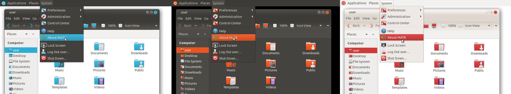

Give your desktop a splash of color
Themes typically resolve around a single set of colors. With the Ubuntu MATE Colours project, you can tailor the Ambiant-MATE and Radiant-MATE themes to match your favorite color.

You must be connected to the internet to download and install software.
Aqua

Blue
Brown
Orange
Pink
Purple
Red
Teal
Yellow
You can change the theme at any time by clicking "Appearance" from the Control Center.